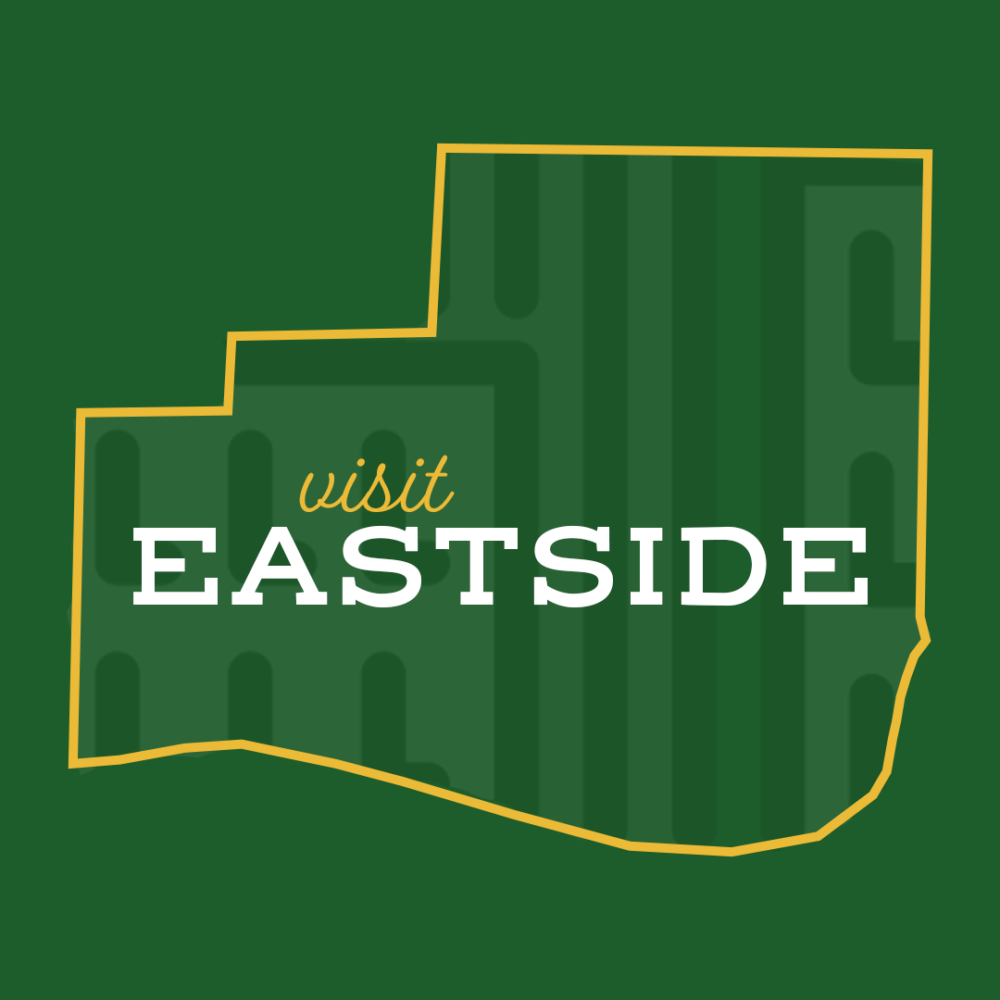

Project and Objective

This was a project for my WRA 410 class. We were tasked to work in groups alongside students from an RCAH class to come up with ideas for community improvement.
Our focus for this project was an area close to campus called the "Eastside Neighborhood." After many stages of drafting, we decided to focus on creating a brand identity and social media presence for the Eastside.
Work

This is a persona created for one demographic of the neighborhood.

This was a Jamboard my team developed to come up with ideas for things that could improve the area.

This was an idea for a website to help encourage community feedback. I created this in Adobe Xd.
End Result
The end result of this project is pending.
Reflection
Through this project, I learned about the steps of the design thinking process as well as valuable teamwork skills that will continue to help me in my educational and professional careers.